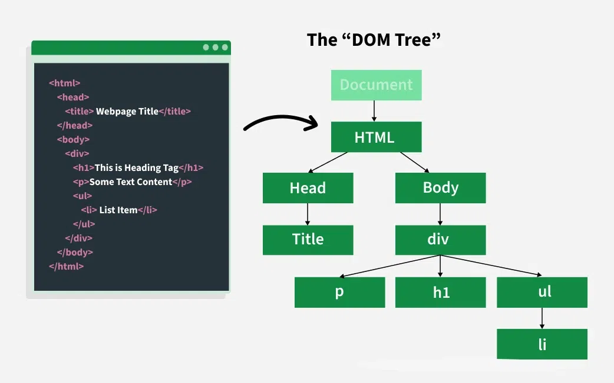
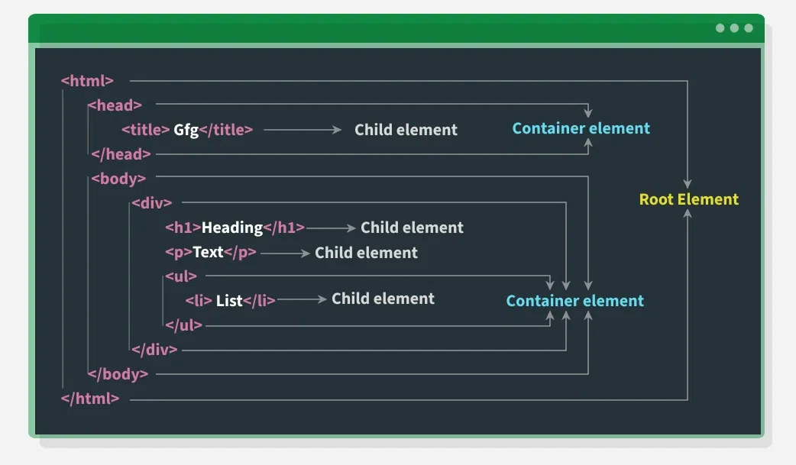

Day 25: Understanding DOM structure and selectors.
The DOM (Document Object Model) represents an HTML document as a tree structure of nodes, where each element,
attribute, and piece of text is a node. Selectors are ways to target specific nodes in this tree, using CSS-style
rules or JavaScript methods like getElementById, querySelector, and getElementsByClassName
The HTML DOM (Document Object Model) is a structured representation of a web page that allows developers to access,
modify, and control its content and structure using JavaScript. It powers most dynamic website interactions,
enabling features like real-time updates, form validation, and interactive user interfaces.

DOM Tree1

DOM Tree2

Why is DOM Required?
The DOM is essential because:
- Dynamic Content Updates: Without reloading the page, the DOM allows content updates (e.g., form validation, AJAX
responses).
- User Interaction: It makes your webpage interactive (e.g., responding to button clicks, form submissions).
- Flexibility: Developers can add, modify, or remove elements and styles in real-time.
- Cross-Platform Compatibility: It provides a standard way for scripts to interact with web documents, ensuring
browser compatibility.
How the DOM Works?
The DOM connects your webpage to JavaScript, allowing you to:
- Access elements (like finding an h1 tag).
- Modify content (like changing the text of a p tag).
- React to events (like a button click).
- Create or remove elements dynamically.
What Are DOM Selectors?
DOM (Document Object Model) selectors allow you to access and control HTML elements using JavaScript. Before you
can change text, styles, or attributes, you need to select the element.
The most common ones are:
- getElementById
- getElementsByClassName
- querySelector